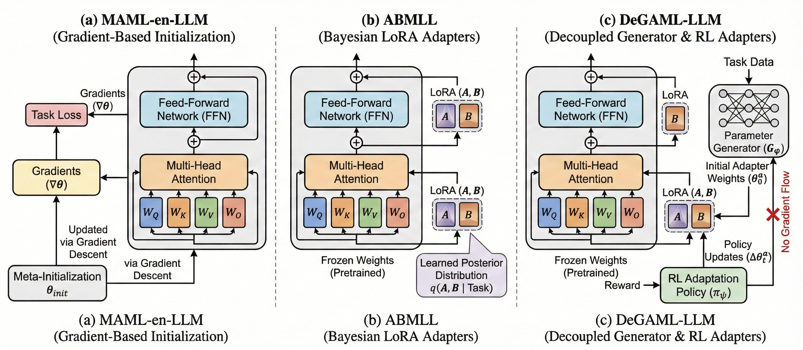

DeGAML-LLM: Decoupling Generalization and Adaptation in Meta-Learning for Large Language Models
Abstract
Fine-tuning large language models (LLMs) for downstream tasks remains expensive, even with parameter-efficient methods like Low-Rank Adaptation (LoRA). In this regard, meta-learning approaches such as Model-Agnostic Meta-Learning for LLMs (MAML-en-LLM) and Amortized Bayesian Meta-Learning for LoRA (ABMLL) have emerged as promising solutions for rapid downstream LLM adaptation. However, these methods fundamentally couple two distinct objectives: learning generalizable initializations and enabling efficient task adaptation. We argue that this coupling limits both the quality of learned representations and adaptation efficiency.
In this paper, we introduce DeGAML-LLM (Decoupled Generalization and Adaptation Meta-Learning for Large Language Models), a novel framework that explicitly separates these two objectives through dedicated parameter spaces. Specifically, we maintain a generalization module that learns task-agnostic representations across the task distribution, and an adaptation module that specializes in rapid task-specific adjustment. Extensive experiments on common-sense reasoning, mathematics, logic, social, medical and coding benchmarks across model scales demonstrate that DeGAML-LLM outperforms existing meta-learning and standard multi-task baselines.
Key Contributions
Method Overview

Internal Transformer Architecture Modifications. (a) MAML-en-LLM updates all weights via gradients from a meta-learned initialization. (b) ABMLL samples low-rank LoRA adapters from a learned Bayesian posterior distribution. (c) DeGAML-LLM uses a separate generator to predict initial adapter weights, which are then refined by a separate RL policy without gradient backpropagation to the generator.
Generalization Module
Learns to generate LoRA adapter parameters from task prompts using a hyperconvolutional decoder trained on checkpoint trajectories. Captures cross-task structural knowledge without encoding any specific adaptation trajectory.
Adaptation Module
Refines generated parameters via an RL policy that selects from four adaptation families: Test-Time Training (TTT), Test-Time Scaling (TTS), LoRA Mixing, and Latent Space optimization.
Experimental Results
In-Domain Tasks (Common-Sense Reasoning)
Qwen2.5-1.5B-Instruct
| Method | ARC-c | ARC-e | HellaSwag | BoolQ | PIQA | WinoGrande | Avg |
|---|---|---|---|---|---|---|---|
| No Meta-Train LoRA | 74.5 | 84.4 | 55.8 | 55.6 | 65.6 | 48.2 | 64.0 |
| Union Train LoRA | 63.2 | 73.9 | 48.9 | 55.1 | 47.8 | 61.3 | 58.3 |
| ABMLL | 69.9 | 83.2 | 51.1 | 63.2 | 54.3 | 52.9 | 62.4 |
| MAML-en-LLM | 66.0 | 84.3 | 59.3 | 58.7 | 68.1 | 56.8 | 65.5 |
| DeGAML-LLM (Ours) | 73.7 | 88.4 | 57.2 | 58.8 | 70.7 | 57.3 | 67.7 |
| Δ (vs MAML-en-LLM) | +7.7 | +4.1 | -2.1 | +0.1 | +2.6 | +0.5 | +2.2 |
| Δ (vs ABMLL) | +3.8 | +5.2 | +6.1 | -4.4 | +16.4 | +4.4 | +5.3 |
| Δ (vs No Meta-Train) | -0.8 | +4.0 | +1.4 | +3.2 | +5.1 | +9.1 | +3.7 |
| Δ (vs Union Train) | +10.5 | +14.5 | +8.3 | +3.7 | +22.9 | -4.0 | +9.4 |
Qwen2.5-0.5B-Instruct
| Method | ARC-c | ARC-e | HellaSwag | BoolQ | PIQA | WinoGrande | Avg |
|---|---|---|---|---|---|---|---|
| No Meta-Train LoRA | 40.7 | 59.4 | 23.4 | 22.1 | 66.2 | 35.7 | 41.2 |
| Union Train LoRA | 39.7 | 47.4 | 26.3 | 14.7 | 51.1 | 50.5 | 38.3 |
| ABMLL | 37.6 | 54.4 | 26.5 | 62.2 | 37.6 | 34.5 | 42.1 |
| MAML-en-LLM | 47.7 | 63.7 | 36.3 | 46.2 | 67.7 | 50.1 | 51.9 |
| DeGAML-LLM (Ours) | 55.5 | 74.7 | 48.3 | 58.7 | 60.1 | 52.8 | 58.4 |
| Δ (vs MAML-en-LLM) | +7.8 | +11.0 | +12.3 | +12.5 | -7.6 | +2.7 | +6.5 |
| Δ (vs ABMLL) | +17.9 | +20.3 | +21.8 | -3.5 | +22.5 | +18.3 | +16.3 |
| Δ (vs No Meta-Train) | +14.8 | +15.3 | +24.9 | +36.7 | -6.1 | +17.1 | +17.2 |
| Δ (vs Union Train) | +15.8 | +27.3 | +22.0 | +44.1 | +9.0 | +2.3 | +20.1 |
Out-of-Domain Tasks
Qwen2.5-1.5B-Instruct
| Method | GSM-8K | MATH | DivLogicEval | SocialIQA | CodeMMLU | JAMA | Avg |
|---|---|---|---|---|---|---|---|
| Union Train LoRA | 34.2 | 32.2 | 24.1 | 51.4 | 34.7 | 34.7 | 36.1 |
| ABMLL | 28.7 | 15.9 | 26.9 | 66.3 | 39.6 | 28.5 | 34.3 |
| MAML-en-LLM | 35.6 | 43.5 | 31.2 | 68.7 | 42.3 | 32.5 | 42.3 |
| DeGAML-LLM (Ours) | 51.4 | 46.9 | 31.4 | 69.5 | 44.6 | 41.5 | 47.5 |
| Δ (vs MAML-en-LLM) | +15.8 | +3.4 | +0.2 | +0.8 | +2.3 | +9.0 | +5.3 |
| Δ (vs ABMLL) | +22.7 | +31.0 | +4.5 | +3.2 | +5.0 | +13.0 | +13.2 |
| Δ (vs Union Train) | +17.2 | +14.7 | +7.3 | +18.1 | +9.9 | +6.8 | +11.4 |
Qwen2.5-0.5B-Instruct
| Method | GSM-8K | MATH | DivLogicEval | SocialIQA | CodeMMLU | JAMA | Avg |
|---|---|---|---|---|---|---|---|
| Union Train LoRA | 15.6 | 6.8 | 20.3 | 39.5 | 29.8 | 29.9 | 23.6 |
| ABMLL | 20.4 | 7.1 | 23.7 | 53.1 | 28.2 | 16.8 | 24.9 |
| MAML-en-LLM | 29.1 | 26.3 | 25.1 | 54.9 | 34.1 | 26.4 | 32.6 |
| DeGAML-LLM (Ours) | 30.3 | 24.5 | 28.7 | 55.1 | 35.6 | 31.2 | 34.2 |
| Δ (vs MAML-en-LLM) | +1.2 | -1.8 | +3.6 | +0.2 | +1.5 | +4.8 | +1.6 |
| Δ (vs ABMLL) | +9.9 | +17.4 | +5.0 | +2.0 | +7.4 | +14.4 | +9.3 |
| Δ (vs Union Train) | +14.7 | +17.7 | +8.4 | +15.6 | +5.8 | +1.3 | +10.6 |
Key Findings:
- DeGAML-LLM consistently outperforms baselines across both model scales
- Particularly strong on out-of-domain tasks: +15.8 on GSM-8K and +9.0 on JAMA (1.5B)
- Larger improvements on smaller 0.5B model demonstrate effectiveness at limited capacity
- Average improvement of +5.3 points over MAML-en-LLM on out-of-domain tasks (1.5B)
Ablation Study
Impact of generalization and adaptation stages. Base Model denotes the frozen pretrained LLM without any LoRA adapters. Generalization evaluates performance using generated LoRA parameters without task-specific refinement. Adaptation applies RL-based refinement to the generated parameters.
In-Domain Tasks
Qwen2.5-1.5B-Instruct
| Stage | ARC-c | ARC-e | HellaSwag | BoolQ | PIQA | WinoGrande | Avg |
|---|---|---|---|---|---|---|---|
| Base Model | 71.5 | 83.0 | 50.9 | 56.3 | 45.8 | 50.6 | 59.6 |
| + Generalization | 73.0 (+2.1%) | 83.7 (+0.8%) | 56.2 (+10.4%) | 55.2 (-2.0%) | 56.4 (+23.1%) | 50.2 (-0.8%) | 62.5 (+4.9%) |
| + Adaptation | 73.7 (+1.0%) | 88.4 (+5.6%) | 57.2 (+1.8%) | 58.8 (+6.5%) | 70.7 (+25.4%) | 57.3 (+14.1%) | 67.7 (+8.3%) |
Qwen2.5-0.5B-Instruct
| Stage | ARC-c | ARC-e | HellaSwag | BoolQ | PIQA | WinoGrande | Avg |
|---|---|---|---|---|---|---|---|
| Base Model | 38.3 | 54.8 | 26.5 | 37.0 | 16.6 | 50.2 | 37.2 |
| + Generalization | 42.7 (+11.5%) | 63.2 (+15.3%) | 25.9 (-2.3%) | 44.9 (+21.4%) | 47.6 (+186.7%) | 50.0 (-0.4%) | 45.7 (+22.9%) |
| + Adaptation | 55.5 (+30.0%) | 74.7 (+18.2%) | 48.3 (+86.5%) | 58.7 (+30.7%) | 60.1 (+26.3%) | 52.8 (+5.6%) | 58.4 (+27.8%) |
Out-of-Domain Tasks
Qwen2.5-1.5B-Instruct
| Stage | GSM-8K | MATH | DivLogicEval | SocialIQA | CodeMMLU | JAMA | Avg |
|---|---|---|---|---|---|---|---|
| Base Model | 51.8 | 30.3 | 28.3 | 65.9 | 42.6 | 38.9 | 42.9 |
| + Generalization | 32.6 (-37.1%) | 40.1 (+32.3%) | 28.6 (+1.1%) | 68.6 (+4.1%) | 44.1 (+3.5%) | 39.5 (+1.5%) | 42.2 (-1.6%) |
| + Adaptation | 51.4 (+57.7%) | 46.9 (+17.0%) | 31.4 (+9.8%) | 69.5 (+1.3%) | 44.6 (+1.1%) | 41.5 (+5.1%) | 47.5 (+12.6%) |
Qwen2.5-0.5B-Instruct
| Stage | GSM-8K | MATH | DivLogicEval | SocialIQA | CodeMMLU | JAMA | Avg |
|---|---|---|---|---|---|---|---|
| Base Model | 15.2 | 2.8 | 22.4 | 50.8 | 32.4 | 23.8 | 24.5 |
| + Generalization | 20.8 (+36.8%) | 24.1 (+760.7%) | 21.0 (-6.3%) | 33.5 (-34.1%) | 29.1 (-10.2%) | 11.7 (-50.8%) | 25.7 (+4.9%) |
| + Adaptation | 30.3 (+45.7%) | 24.5 (+1.7%) | 28.7 (+36.7%) | 55.1 (+64.5%) | 35.6 (+22.3%) | 31.2 (+166.7%) | 34.2 (+33.1%) |
Ablation Insights:
- The generalization module alone provides substantial improvements over the base model
- The adaptation module further refines performance, especially on complex tasks (HellaSwag: +86.5% for 0.5B)
- Out-of-domain tasks show particularly large gains from adaptation (MATH: +760.7% generalization, then adaptation refines it)
- Decoupling enables the adaptation policy to recover from suboptimal generalization (e.g., GSM-8K: -37.1% → +57.7% for 1.5B)
BibTeX
@article{vetcha2025degaml,
title={Decoupling Generalization and Adaptation in Meta-Learning for Large Language Models},
author={Vetcha, Nitin and Xu, Binqian and Liu, Dianbo},
journal={arXiv preprint},
year={2025},
url={https://github.com/nitinvetcha/DeGAML-LLM}
}